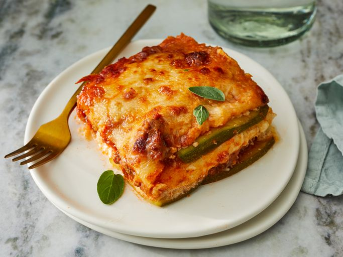

Low-Carb Zucchini Recipe

Description
Keto lasagna made with zucchini slices instead of pasta. This low-carb, gluten-free beef lasagna is delicious and satisfying; it's a crowd-pleaser!
Ingredients
- Cooking spray
- Large zucchinis
- Olive oil
- Ground beef
- Low-carb marinara sauce
- Seasoning Salt, black pepper and oregano
- Cheeses Mozzarella and parmesan
- Egg
- Ground nutmeg
Steps
- Preheat the oven to 375 degrees F (190 degrees C). Grease an 8-inch baking dish with cooking spray.
- Pat dry zucchini slices with a paper towel to remove excess moisture. Set aside
- Heat olive oil in a saucepan over medium-high heat. Add ground beef; cook until browned, 5 to 8 minutes.
- Add marinara sauce, 1 teaspoon salt, oregano, and pepper; simmer for 10 minutes. Set aside.
- Combine ricotta cheese, egg, 1 teaspoon salt, and nutmeg in a bowl; mix well. Set aside.
- Arrange one layer of zucchini slices in the prepared baking dish. Cover with 1/2 of the sauce. Add another layer of zucchini slices.
- Spread ricotta mixture on top. Sprinkle with 1/2 of the mozzarella cheese. Add another layer of zucchini slices
- Cover with remaining sauce and top with remaining mozzarella cheese and Parmesan cheese. Cover the baking dish with aluminum foil.
- Bake in the preheated oven for 30 minutes. Remove aluminum foil and bake until top is golden, about 15 minutes more.